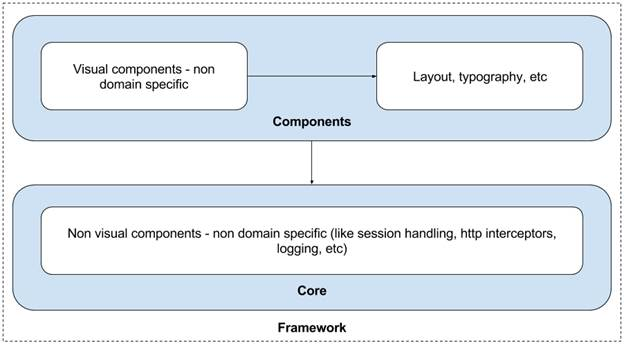
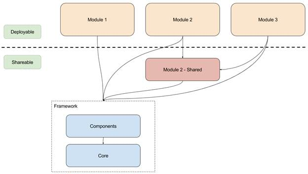
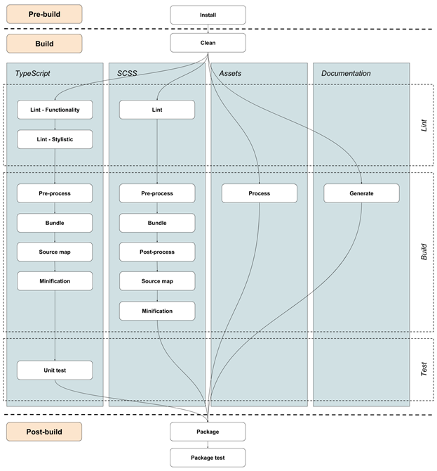
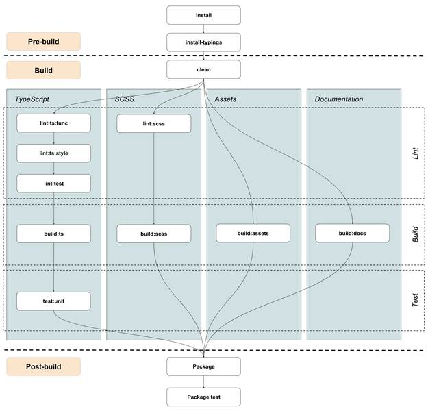
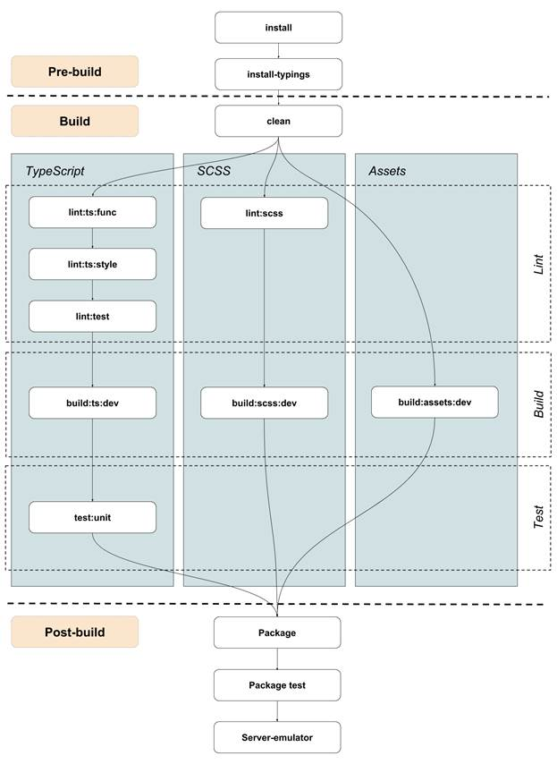
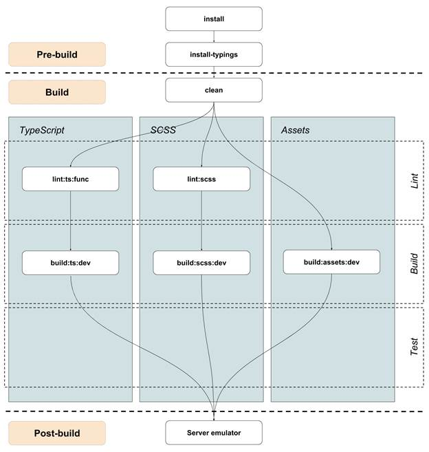
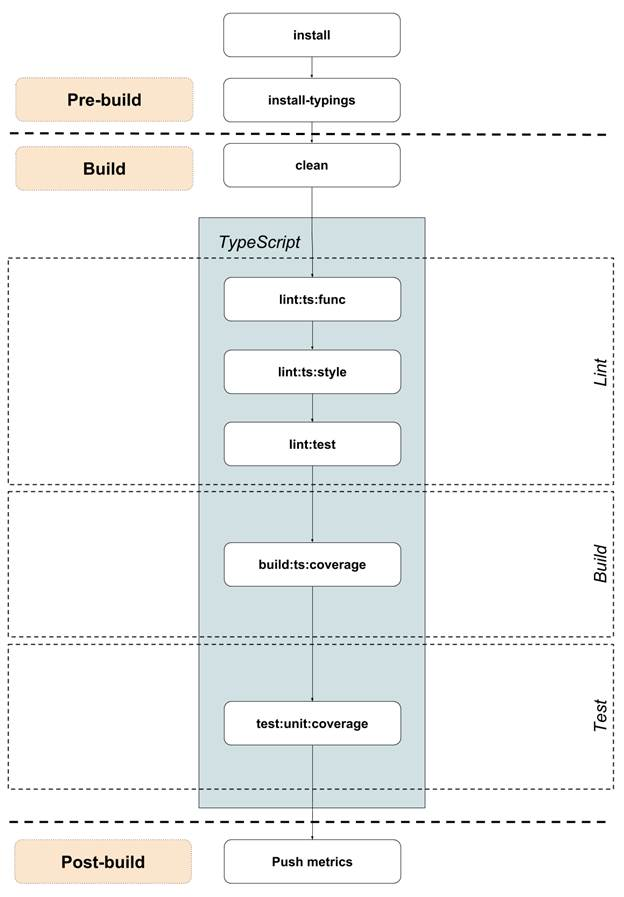
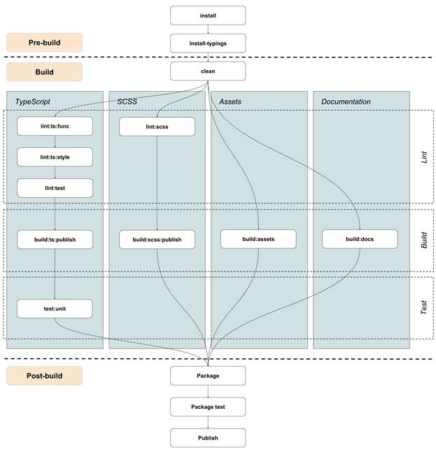

UNIVERSAL FRONTEND ARCHITECTURE
Architecture
Note: This Architecture is based on the 12 Factor Principles https://12factor.net/ for SAAS and PAAS applications.
Horizontal framework
We need a horizontal (generic purpose) framework, which can be the base of our vertical framework. We’re looking for a full framework:
- Open Source
- Nice and clean architecture
- Modular
- Consistent
- Component based approach
- Unit testing
- Provides a lot of tools out of the box
- Designed for large scale development
Examples: Angular, ReactJS
Vertical Framework
It provides tools out of the box, which are non domain specific or common across all products, for example logging, security, navigation (between pages and Modules), components, etc. These tools helps you focus on solving domain specific problems and avoid boilerplate coding.

3rd Party Libs
It is essential to have a harmonized / standardized 3rd party library set. It makes possible to share code and can prevent code conflicts. The Framework’s responsibility is to define the standardized 3rd party library set, which common across domains.
3rd party libs should be handled via dependencies, they should not be part of the source code.
We can split the libs into 3 logical groups:
- Architecture: This group contains the libs which define or specify the architectural patterns what we should follow in development time. For example Angular2 gives us the MVC and the MVVM architectural patterns.
- Design / Components: This group contains the libs which make easier to develop the design and widgets. For example Bootstrap gives us a lot of tools to develop responsive, mobile first web apps. All the 3rd party widgets like D3.js or UI Grid belongs here.
- Utilities: This group contains the libs which provider utilities for solving special problems. For example Lodash makes it easier to handle collections and arrays, or MomentJs gives us a lot of tools for date and time handling.
Core Framework
Module Dependency
What is a Module?
Module by itself is a final product, a bounded context (http://martinfowler.com/bliki/BoundedContext.html). A Module cannot be extended, augmented or changed, but another Module can be created that provides the desired augmented services or extensions.
A Module is always domain specific and a deployable unit. The recommendation is one Module is one package.
A user workflow typically involves N Modules. The Framework allows seamless navigation across Modules.
SDK
What is a SDK?
A software development kit (SDK) is a set of tools used for developing applications provided by hardware and software providers. SDKs are usually comprised of application programming interfaces (APIs), sample code, documentation, etc.
Why do we need a SDK?
From a business perspective, the idea is that a tightly knit development community will serve as a competitive advantage in the marketplace. An example is Apple and the combination of the iPhone and the App Store™. The selection of applications for the iPhone provides a competitive advantage to Apple versus its competitors. In this sense, the device goes from being a commoditized piece of hardware to a platform that other companies need to plugin to. So while the term SDK has been around since the beginning of software, it can often serve as the starting point in an IT company’s business strategy.
How to approach a SDK?
Below are a few ways to acheive SDK
- Modularized Code makes it easy to extend parts of application instead as a whole
- Extension Points to most of the moving parts of a application like Services, Controllers etc.
- Detailed API Documentation
- Scaffolding Tools
- Configuration over Code (Metadata based application)
- Tools to generate the configuration
UI SDK through configuration
Enterprise Digital Software consists mainly of Forms, Lists and Dashboards. So by targeting to make these three major components to be rendered based on Configuration allows us to make the Code comply to CUDM (Customizable, Upgradable, Deployable and Migratable)
For each component (form, list or dashboard) we need the below
- Registry to register sub-components with their specific configuration
- Configuration Interpretor and Renderer
- Designer to allow generation of the Configuration through Drag n Drop for super fast development and also this allows us to acheive constrained development
Build System Requirements
What is a build system?
A tool which prescribes and executes the stages in the build pipeline. From another perspective, a build system is a set of steps which transform the source code into something deployable or shareable. It provides utilities to make the development faster and easier.
Why we need a build system?
To automate all the manual tasks, enforce consistency, unify the output format and make the development faster/easier.
What are the responsibilities of a build system?
- Pre-process TypeScript and SCSS
- Bundle TypeScript and SCSS
- Source map Generation
- Minification
- Watch
- Incremental rebuild
- Lint
- Serve
- Test
- Dependency Management
Generic Build Pipeline
Production Build Pipeline
Development Build Pipeline
Incremental Development Build Pipeline
Coverage Build Pipeline
Publish Build Pipeline
Coding Conventions
What does it mean?
Coding conventions are a set of rules / guidelines for a specific programming language that recommend programming style, practices and methods for each aspect of a piece program written in this language. These conventions usually cover file organization, indentation, comments, declarations, statements, whitespace, naming conventions, programming practices, programming principles, programming rules of thumb, architectural best practices, etc. These are guidelines for software structural quality. Conventions should be formalized in a documented set of rules that an entire team or company follows.
Why we need coding conventions?
The main goal is to reduce the overall cost of software maintenance, but there are many other reasons like:
- Enforce consistency
- Unified knowledge base, solid ground for working together
- Protect us from common mistakes
- Improve readability
- Easier maintenance
What should the coding conventions cover?
It should cover the followings:
- JavaScript (ECMAScript 6)
- TypeScript
- CSS
- SASS
- HTML
- Angular or ReactJS Specific
Output Format Requirements
Deployable format requirements for production
The goal is to have a highly optimized output for production.
TypeScript
- JavaScript - ECMAScript 5 (which is currently supported by all browsers)
- Minified
- Concatenated
- Source map attached
SCSS
- CSS (which is currently supported by the browsers)
- Minified
- Concatenated
- Source map attached
HTML
Assets
- Processed
- Optimized
Documentation
- Should NOT be attached
3rd party libs and dependencies
- Should be attached in a separated file
Shareable format requirements for publishing
The idea is that you can use any kind of programming language (ES5, ES6, TypeScript or whatever you want) for development, but when you share it via npm, you should produce an output which is conform with the requirements (see below). So before we publish a package to the npm repository, we need to pre-process the source code. This is the bare minimum and a must to be able to share code via npm.
TypeScript
- JavaScript - ECMAScript 5 (which is currently supported by all browsers)
- Minified
- Concatenated
- Source map attached
- TypeScript type definitions attached
SCSS
- CSS3 (which is currently supported by all browsers)
- Minified
- Concatenated
- Source map attached
- Original source attached (SCSS)
HTML
Assets
- Processed
- Optimized
Documentation
- Generated API / source code documentation attached
- Architectural / user documentation attached (README.md)
3rd party libs and dependencies
- Should NOT be attached